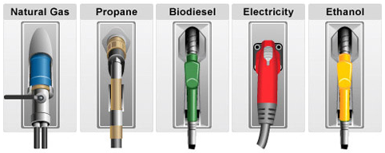

Pros: No bad emissions!
Cons: Expensive and difficult to install.
Pros: Very efficient, fuel cells produce power without combustion or pollution!
Cons: Most electricity today is generated from coal or natural gas which create a carbon footprint.
Pros: Safe, biodegradable and greatly reduces air pollutants.
Cons: Limited production and distribution.
Pros: Less emissions than gas or diesel.
Cons: Emits Methane which is a greenhouse gas.
Pros: Less emissions than gas and we already have transport, storage and installation figured out!
Cons: Aso emits methane.
Pos: Renewable materials.
Cons: Potential negative effect on price and availability of foods.
Pros: P-Series are clear high octane fuels and can be used alone or mixed in any ratio with gasoline.
Cons: Manufacturers do not make flexible fuel vehicles.
If you are interested in learning more about alternative fuels, please visit the links below, or try clicking on the name of an alternative fuel above!